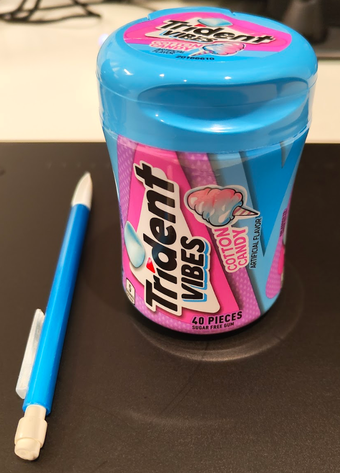
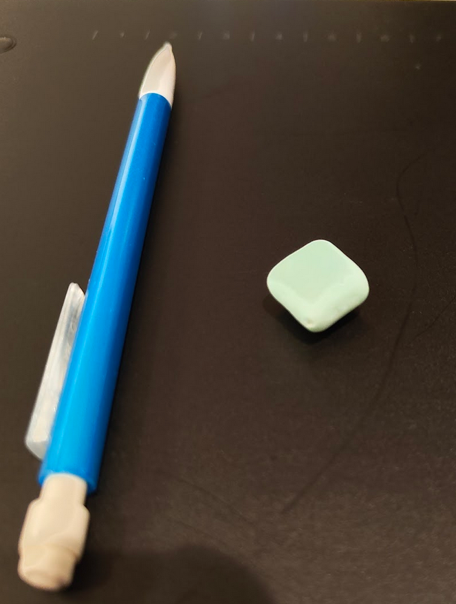
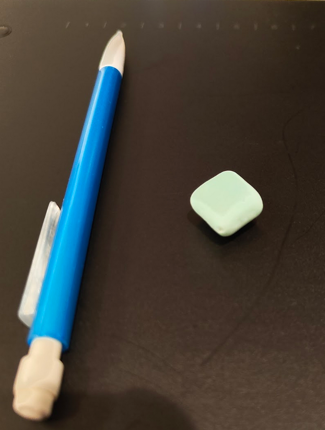
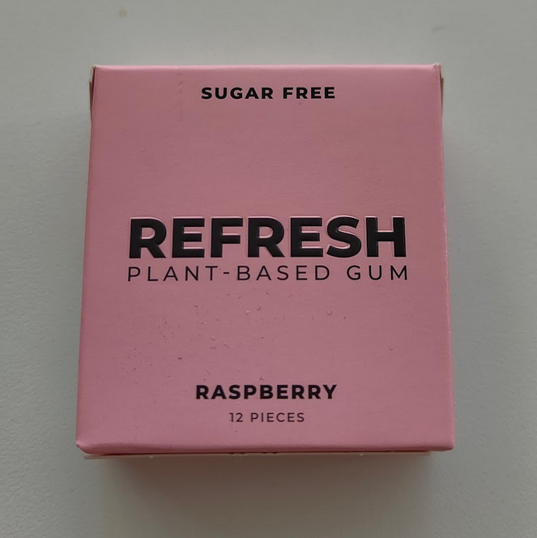
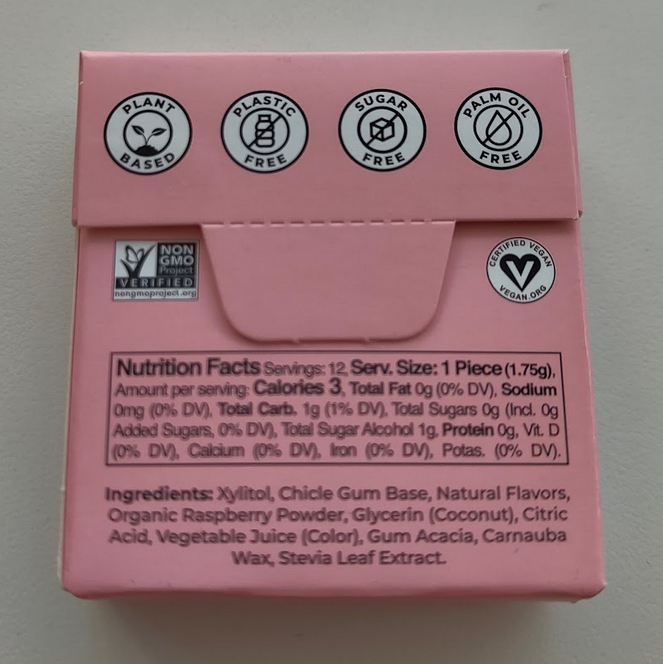

November 15, 2025
When I was in elementary and middle school, chewing gum was a sacred piece of currency traded in a school-wide black market. Debts were paid and collected in the form of gum ("I gave you gum last week -- what were the answers to the homework?"). I'm not innocent when it comes to begging for gum, either -- I was usually one of the first to perk up, sensing the magnetic pull of a stick of Trident and immediately begging for a piece.
My parents rarely had any gum, fearing dental and jaw development issues. As a 10-year-old kid, I would beg for a pack of gum every time we came to the cash register at ShopRite. Now, no longer a 10-year-old, I am free to make choices with my own money!
And so we come to this blog. I will be recording the taste and experience of every single piece of gum I chew starting from Nov. 15, 2025. I've always found comfort and joy in collecting, categorizing, and ranking simple things.
The archive will be organized by company/brand, but this taxonomy is subject to change when I inevitably think of a better method during a long, hot shower.
Some general notes on my rankings and ratings:
- Chew time is measured from the first bite to when I spit out the gum. This is a relatively subjective measurement as I have no quantitative metric for this. It's usually just when the flavor runs out or my jaw gets tired.
Trident
Trident gum can be found everywhere across supermarkets and retailers large and small.
| Brand | Product | Flavor | Chew Time (hours) | Rating | Opinions | Images |
|---|---|---|---|---|---|---|
| Trident | Vibes | Cotton Candy | 2-3 | 7/10 | The flavor does have a strong candy taste and is sweet. The main flavor tastes indeed like biting into a large piece of cotton candy. During the first 10-15 minutes of chewing when the flavor is most intense, there is a slightly cooling/minty effect on the tongue. I also taste very slight hints of orange. It is overall pleasant and enjoyable, though the flavor was a little unexpected for me at the start as I very rarely have tried non-fruit or non-mint flavored gums. |

 

|
Miscellaneous
For all the smaller gum brands with less products.
| Brand | Product | Flavor | Chew Time (hours) | Rating | Opinions | Images |
|---|---|---|---|---|---|---|
| Refresh | - | Raspberry | 3-4 | 7.5/10 |
Refresh is a brand of "plant-based gum," forgoing
traditional synthetic gum bases made with plastics and
petroleum and instead using chicle, a tree sap. As they
claim on
their website,
they use plant-based flavors, "natural colors" from fruits
and vegetables, and "plant-based sweeteners" like xylitol
and stevia.
The gum pieces are a little smaller but still substantial, with a good mouthfeel. After chewing and “breaking in” the gum, it becomes noticeably firmer and a little stickier than your typical convenience-store Trident or Orbit. However, unlike its non-plant-based counterparts, Refresh gum maintains the same texture and does not lose any pliability or softness, even after hours of chewing. The flavor itself is not as strong but lasts much longer. I can still taste a pleasant raspberry note after more than two hours of chewing. There is no mint or cooling sensation at all. When I first started chewing, it had a uniquely slightly salty tinge to it. Underneath the raspberry flaor, there is a unique woody flavor to it as well. |
  |